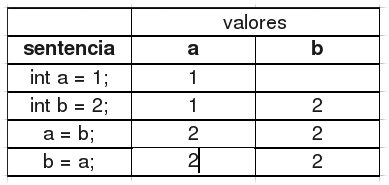
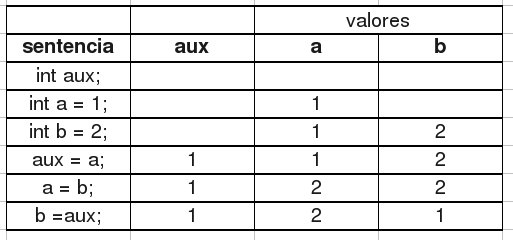
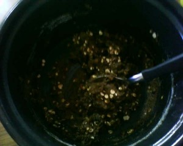

{kind=link}
Euler 2 (Python)
Enunciado 2
Cada nuevo item en la secuencia de Fibonacci es generado sumando los dos términos previos. Empezando con 1 y 2, los primeros 10 términos serían:
1, 2, 3, 5, 8, 13, 21, 34, 55, 89, ...
Encontrar la suma de todos los términos pares en la secuencia que no supera los 4 millones.
Solución
La solución fue obtenida en el intérprete interactivo de Python 2.5.2:
>>> MAX = 4000000 >>> def evsum(n): ... s = 0 ... a,b = 1,2 ... while True: ... if a >= n: ... break ... if a % 2 ==0: ... print a, " ", ... s += a ... a,b = b,a+b ... return s ... >>> evsum(MAX) 2 8 34 144 610 2584 10946 46368 196418 832040 3524578 4613732
Python tips
- La asignación múltiple es un idom muy cómodo:
a,b = 1,2 - Si agregamos una coma final a la enumeración de objetos a ser impresos con
print, se logra el efecto de que no se imprima el salto de línea (\n) final.
Euler 1 (Python)
Project Euler es un sitio web que reta a los programadores a resolver problemas matemáticos mediante código. Me parece entretenido. Voy a ir resolviendo problemas y posteando mi solución en Python acompañada de comentarios sobre el código que puedan servirles a quienes están empezando a aprender el lenguaje.
Enunciado 1
Si listamos todos los números menores a 10 que son múltiplos de 3 o 5, obtenemos 3, 5, 6 y 9. La suma de esos múltiplos es 23.
Encontrar la suma de todos los múltiplos de 3 o 5 menores a 1000.
Solución
La solución fue obtenida en el intérprete interactivo de Python 2.5.2:
>>> def mults(n=10): ... r = [] ... for i in range(1, n): ... if i % 3 == 0: ... r.append(i) ... elif i % 5 == 0: ... r.append(i) ... return r ... >>> mults() [3, 5, 6, 9] >>> sum(mults()) 23 >>> sum(mults(n=1000)) 233168
Python tips
- En la definición de la función
multsse incluye un argumento por defectoncon valor10. Cuando más adelante se llama a esta función sin parámetros,ntoma el valor por defecto. - La función
range, incluida en el lenguaje devuelve una lista de números sobre la que se puede iterar. Muy útil para usar con la estructurafor. Más información haciendohelp(range)en el intérprete interactivo.
Budín de remolacha y nuez
Ingredientes
60 g de manteca.
150 g de miel.
2 huevos.
125 g de remolacha cruda rallada.
100 g de nueces picadas.
300 g de harina leudante.
C/n de leche.
Preparación
Batir la manteca con la miel y agregar los huevos de a uno. Incorporar la remolacha y las nueces. Incorporar el harina tamizada y si la preparación queda muy dura, un poco de leche.
Colocar en molde enmantecado u enharinado o rociado con rocío vegetal. Hornear 18 grados 40 min.
[gallery]
Nuevo perrito
{kind=link}
URLs elegantes con Django
Este texto es parte del informe de nuestro proyecto final de carrera, lo publico en forma separada aquí por que tiene valor propio y puede convencer a más de un programador PHP de probar Django. Las URLs elegantes son la forma natural de las URL en Django.
Manejo de URLs
Tener URLs elegantes y limpias es un requisito común para aplicaciones web modernas. Django provee un mecanismo de manejo de URLs basado en expresiones regulares que asocia una expresión regular a una vista.
Para diseñar las URLs de una aplicación Django, se construye una especie de tabla que mapea patrones de URL a funciones Python a ejecutar (vistas). Con esto se logra que las URLs estén desacopladas del resto de la aplicación.
El siguiente es un ejemplo de una entrada de esa tabla:
(r'^index/$', index)
Suponiendo que la aplicación web está corriendo en el servidor con nombre localhost, cuando alguien acceda a http://localhost/index/ se ejecutará la vista ‘index’.
El siguiente es un ejemplo un poco más complejo:
(r'^cliente/datos/(\d+)/$', cliente_datos)
En el patrón de la URL se utilizan paréntesis para capturar una parte de la misma y poder accederla luego como parámetros en la vista. La expresión encerrada entre paréntesis se denomina grupo y son propias de las expresiones regulares en Python. Así, siempre que se acceda a, por ejemplo, http://localhost/cliente/datos/1/ o http://localhost/cliente/datos/100/ se ejecutará la vista cliente_datos y recibirá como parámetro el número correspondiente.
Algo similar sucede en el siguiente ejemplo:
(r'^inmueble/fotos/(\d+)/eliminar/(\d+)/$', eliminar_foto)
Con la diferencia de que ahora la vista recibe dos parámetros, en este caso particular el primero corresponde a un identificador de inmueble y el segundo a un identificador de foto.
Las expresiones regulares en Python soportan también lo que se denomina grupos nombrados. Esto permite obtener un grupo por su nombre. Si escribimos una especificación de URL como la siguiente:
(r'^inmueble/fotos/(?P<inmueble>\d+)/eliminar/(?P<foto>\d+)/$', eliminar_foto)
la vista será llamada utilizando parámetros nombrados. Esto tiene la ventaja de que si cambia el orden de los parámetros en la URL, la vista seguirá funcionando sin que se necesite redefinirla.
Intercambio de valores rápido en Python
Cuando empecé a cursar Ingeniería en Sistemas en el año 2003, tuvimos una materia llamada Algoritmos y Estructuras de Datos. La semana del curso estaba compuesta por una clase teórica, una clase práctica y una clase "especial" dictada por un docente de apellido Marina que tenía como objetivo hacernos pensar resolviendo problemas; en las primeras clases ni siquiera programábamos.
El lenguaje de programación de la materia era C y en una de las clases, este docente recordaba risueño que un alumno había querido intercambiar el valor de dos variables
int a = 1;
int b = 2;
haciendo:
a = b;
b = a;
El error es evidente; en a se copia el valor contenido en b (2) pisando el valor original (1) y al ejecutarse la segunda sentencia, el nuevo valor de a (2) es copiado en b.
La siguiente tabla muestra los valores que van tomando las variables a y b:  La forma correcta de intercambiar los valores habría sido utilizando una variable auxiliar en la cual mantener uno de los valores:
int aux;
int a = 1;
int b = 2;
aux = a;
a = b;
b = aux;
La siguiente tabla muestra los valores que van tomando las variables aux, a y b:

Lo gracioso del asunto es que unos años más tarde conocí otro lenguaje de programación, Python.
En Python un tipo de dato que viene con el lenguaje es la tupla. Una tupla es una secuencia (sus elementos tienen orden) inmutable (no se puede cambiar su tamaño o contenido) que puede tener dentro objetos de distinto tipo. Un ejemplo de tupla en Python (contiene tres números y dos cadenas de texto):
(1, 2, "tres", 4, "Juan")
La forma de apuntar a ese objeto desde una variable es simplemente:
a = (1, 2, "tres", 4, "Juan")
Aunque podemos obviar los paréntesis y de todas formas funcionará. Decimos que la tupla es empaquetada:
a = 1, 2, "tres", 4, "Juan"
De forma similar, podemos desempaquetar la tupla en nuevas variables:
b, c, d, e, f = a
La condición es que el número de variables en el lado izquierdo del operador = coincida con el número de elementos en la tupla.
La siguiente sentencia, empaqueta y desempaqueta:
x, y, z = "Juan", 100, 1
Y es equivalente a:
x = "Juan" y = 100 z = 1
Finalmente, esta propiedad del lenguaje nos permite intercambiar rápidamente los valores de 2 (o n) variables:
a = 1 b = 2 a, b = b, a
{kind=link}
Así, lo que un alumno despistado quiso hacer en 2 sentencias y Marina mostró que se hacía correctamente en 3, yo lo hago en 1 :)
Budín de pera
Las siguientes son las instrucciones para preparar un budín de pera. Las fotos y las recetas, como en tantas otras, me las proporcionó mi hermana.
Ingredientes
- Harina leudante 300 g
- Azúcar 200 g
- Manteca 150 g
- Huevos 3
- Peras 2
- Limón 1
Preparación
Batir la manteca blanda con el azúcar. Agregar los huevos de a uno. Incorporar el jugo de un limón y su ralladura. Colocar una pera cortada en cubos, agregar el harina leudante tamizada.
Volcar la preparación en un molde de budín (nº 5) enmantecado y enharinado.
Colocar rodajas de pera, espolvorear con azúcar y hornear.
Imágenes
[gallery]
La historia de Python: Cómo todo se convirtió en sentencias ejecutables
El siguiente texto es una traducción del artículo How Everything Became an Executable Statement de Guido van Rossum publicado en http://python-history.blogspot.com/.
Cómo todo se convirtió en sentencias ejecutables
Los nuevos usuarios de Python a veces se sorprenden al descubrir que todas las partes del lenguaje son sentencias ejecutables, incluyendo la definición de funciones y clases. Eso significa que cualquier sentencia puede aparecer en cualquier lugar en un programa. Por ejemplo, una definición de una función puede aparecer dentro de una sentencia "if" si así se lo desea.
En una versión muy temprana de la gramática de Python esto no era así: los elementos de la gramática tenían un "sabor decorativo", las sentencias import y la definición de funciones solo eran permitidas en el nivel superior de un módulo o script (dónde eran ejecutadas para efectivizarse).
De todas formas, cuando estaba agregando soporte para clases, decidí que esto era muy restrictivo.
Mi razonamiento fue más o menos como sigue. En lugar de definir el cuerpo de una clase sólo como una serie de declaraciones de funciones, también parecía adecuado permitir asignaciones a variables allí. De todas formas, si iba a permitir eso, ¿por qué no ir un escalón más arriba y permitir código ejecutable arbitrario? O, llevando esto aún más lejos, ¿por qué no permitir declaración de funciones dentro de sentencias "if", por ejemplo? Rápidamente se vio que esto permitía una simplificación de la gramática, ya que ahora todos los usos de sentencias (estén identados o no) podían compartir la misma regla de gramática, y de hecho el compilador podría usar la misma función generadora de byte code para todas ellas.
A pesar de que este razonamiento me permitía simplificar la gramática y los usuarios podían colocar sentencias Python en cualquier lugar, esta característica no habilitaba necesariamente ciertos estilos de programación. Por ejemplo, la gramática de Python técnicamente permitía a los usuarios escribir cosas como funciones anidadas aunque la semántica subyacente de Python no aceptara ámbitos anidados. Por lo tanto, el código así operaría de formas inesperadas o "rotas" comparadas con lenguajes que realmente estaban diseñados con esa característica en mente. Con el paso del tiempo, muchas de esas características "rotas" se arreglaron. Por ejemplo, la definición de funciones anidadas sólo empezó a funcionar un poco más correcta en Python 2.1.
Traducido por Juan José Conti.
Revisado por César Portela.
Si encontrás errores en esta traducción, por favor reportalos en un comentario y los corregiremos a la brevedad.
Todas las traducciones de esta serie pueden encontrarse en La historia de Python.
Cookies de avena y pasas
Estas son unas masitas de avena y pasas (también pueden hacerse de avena y miel).
Ingredientes
- Manteca 100 g
- Huevo 1
- Azúcar negra 1/4 taza
- Miel 2 cucharadas
- Avena 1 taza
- Harina integral 1 taza
- Esencia de vainilla c/n
Preparación
Batir la manteca pomada con el huevo y esencia de vainilla. Dividir en dos bols. Al primero agregar azúcar negra, ir revolviendo e incorporar avena y las pasas de uvas y harina integral en cantidad necesaria hasta que tome una consistencia que se puedan formar las masitas.
{kind=link}
{kind=link}
En el segundo, agregar miel luego también avena y harina integral.
{kind=link}
 Tomar un poco de masa con una cuchara y formar las cookies sobre una placa enmantecada y hornear de 10 a 15 minutos.
{kind=link}
{kind=link}
{kind=link}